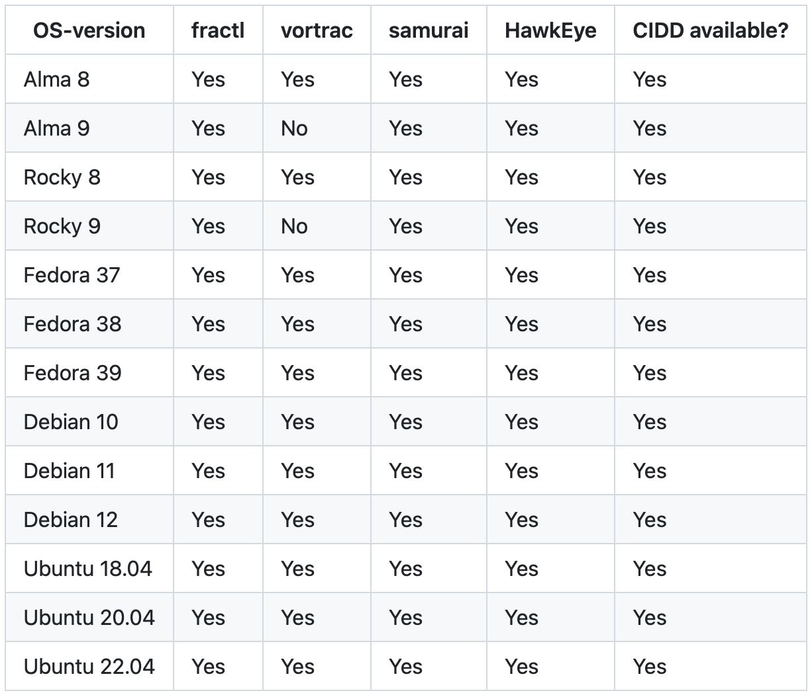

For installation instructions please visit our LROSE Wiki or our GitHub pages.
Click here to register and receive critical software updates
Mac Homebrew Installation
Homebrew is the preferred method that both builds and installs on a Mac. The formula contains all the necessary dependencies and build instructions
Linux Binary Installation
Binary installers are available for most current Linux distributions. A list of supported versions is provided below.

Source Installation
Source compilation can be accomplished on Linux or Mac.
It is best performed
 using a supplied Python script. All dependencies
should be installed prior to building lrose-core. Users may want to do source build to install in a non-stadard location
using a supplied Python script. All dependencies
should be installed prior to building lrose-core. Users may want to do source build to install in a non-stadard location
Previous LROSE versions are provided here:
Copyright © 2026 Colorado State University and National Center for Atmospheric Research